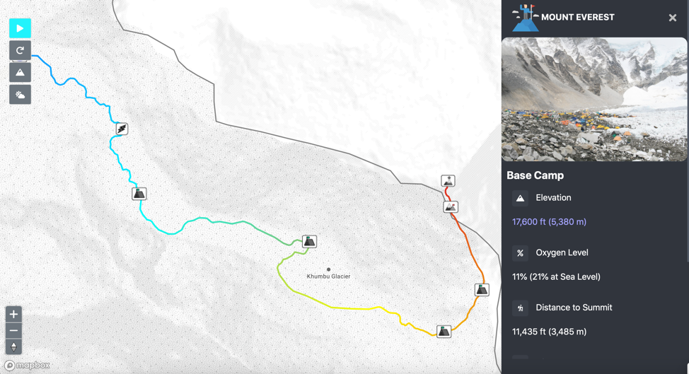
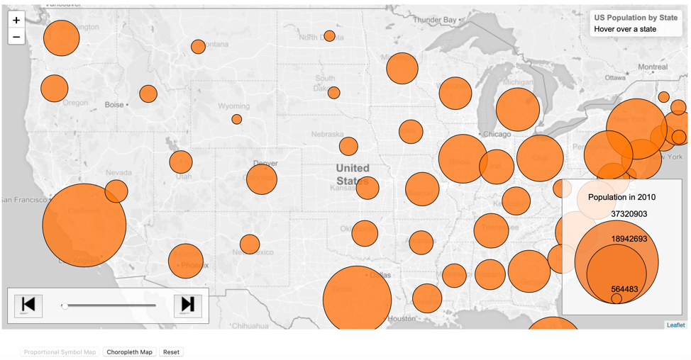
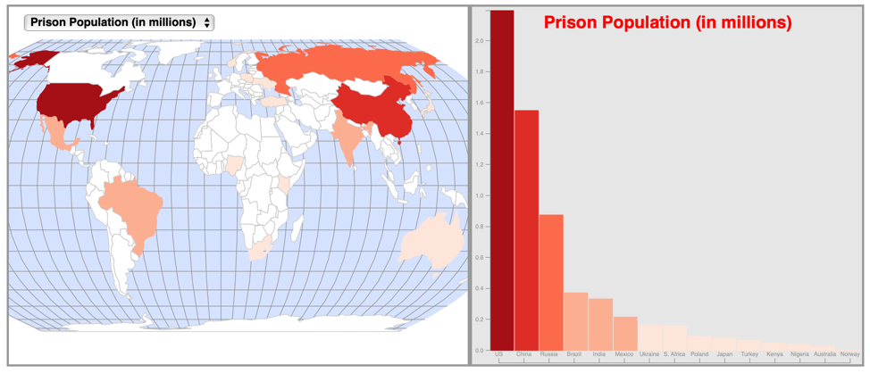

A snapshot of my interactive maps are displayed below. For a closer/deeper look at the maps,
please download my files at
https://github.com/aaronj1/maps.
You will also need to download Prepros, and then drag and drop the files (i.e. an entire project folder, such as “Everest”)
into it in order for the maps to properly display.

This is an animated map showing a major climbing route of Mount Everest.
As the animation plays, a blue circle icon will move along the route, stopping at each point of interest and
displaying information such as the elevation, oxygen level, and distance to summit.

This is a map created with Leaflet, which shows the U.S. population by state. The user can hover over a state to see its
exact population. Additionally, the scroll bar can be used to change the year of the data.
Furthermore, there's an option to change to a choropleth map of the same data.

This is a choropleth map with a linked bar chart, created with D3, which shows the prison population by country.
The user can hover over a country or bar to see the exact number. Furthermore, the user can change the
mapped attribute to Prison Population Per 100,000, Jail Occupancy Level %, Unsentenced Prisoners %, and Women Prisoners %.